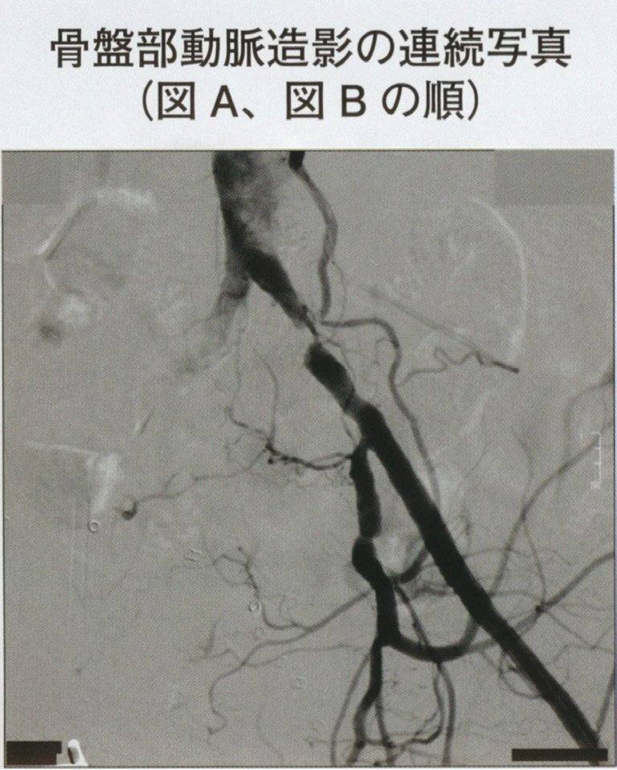
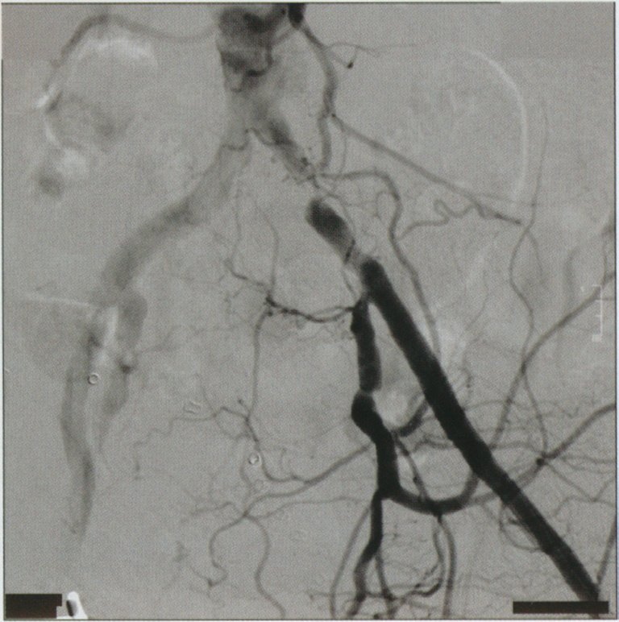
| 治療 | 内容 |
|---|---|
| 生活習慣改善 | 禁煙（最重要）・血糖・血圧・脂質管理 |
| 抗血小板薬 | アスピリン・シロスタゾール（PDE-3阻害→血管拡張+抗血小板） |
| 血管拡張薬 | PGE1製剤・サルポグレラート |
| 運動療法 | 監督下ウォーキング（跛行距離延長） |
| 血行再建術 | EVT（血管内治療）・バイパス手術（Fontaine III〜IV） |
| 項目 | 内容 |
|---|---|
| 診断 | 下肢静脈エコー（第一選択）・D-ダイマー（陰性で除外）・造影CT |
| 治療 | ヘパリン静注→ワルファリン経口またはDOAC |
| 予防 | 弾性ストッキング・間欠的空気圧迫法・早期離床 |
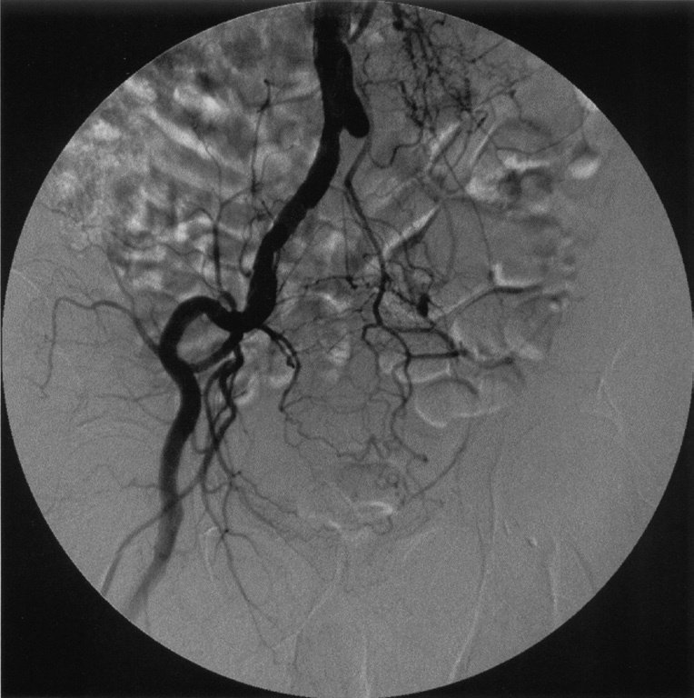
| 症候 | 疾患 |
|---|---|
| 間歇性跛行 | ASO（動脈硬化性閉塞症）・Buerger病 |
| Raynaud現象 | 膠原病（SSc・SLE・RA）・原発性Raynaud病 |
| Virchow三徴 | DVT・PE |
| 静脈瘤（下肢） | 深部静脈弁機能不全・先天性弁不全 |
| リンパ浮腫 | リンパ管閉塞（がん・フィラリア） |
| 検査 | 特性・用途 |
|---|---|
| Dダイマー | 感度89%・特異度55%→スクリーニング（陰性除外） |
| 下肢静脈超音波（圧迫法） | 感度91%・特異度98%→第一選択確定診断 |
| 下肢静脈造影MRA | 感度91%・特異度93%→造影剤リスクあり |
| 空気容積脈波 | 感度85%・特異度91%→参考 |
| ABI（足関節上腕血圧比） | 動脈疾患の評価→DVTには不適 |
| 項目 | 内容 |
|---|---|
| 原因 | 乳癌・子宮癌・前立腺癌術後のリンパ節郭清・放射線療法 |
| 特徴 | 非圧痕性浮腫（タンパク豊富）・繰り返す蜂窩織炎 |
| 圧迫療法 | 弾性着衣（スリーブ・グローブ）・弾性包帯→第一選択 |
| 用手的MLD | リンパの流れを促す特殊マッサージ |
| 禁忌 | 温熱療法（悪化）・感染時マッサージ（菌播種） |
| 因子 | 機序 |
|---|---|
| 妊娠 | 凝固因子↑・静脈うっ滞→高リスク |
| 担癌状態 | 腫瘍がprocoagulant産生→凝固亢進 |
| 経口避妊薬 | エストロゲン→凝固因子↑・抗凝固因子↓ |
| 肥満・長期臥床 | 静脈うっ滞→血流低下 |
| うち "関係ない"もの | う歯治療・H.pylori感染はリスクではない |
| 合併症 | 機序 |
|---|---|
| 高CK血症 | 骨格筋壊死→逸脱→腎障害 |
| 高カリウム血症 | 壊死細胞からK流出→致死的不整脈 |
| 乳酸アシドーシス | 無酸素代謝産物→代謝性アシドーシス |
| ミオグロビン尿 | ヘム蛋白→尿細管障害→急性腎障害 |
| 浮腫・コンパートメント症候群 | 再灌流浮腫→筋膜内圧上昇→筋膜切開 |
| ビリルビン尿 | 溶血時に出現→筋壊死では起きない（正解の選択肢） |
| ABI値 | 判定 |
|---|---|
| >1.3 | 動脈石灰化による偽高値→SPP・TBIで再評価 |
| 1.0〜1.3 | 正常 |
| 0.9〜1.0 | 境界域 |
| <0.9 | ASO疑い |
| <0.7 | ASO確定 |
| <0.4 | 重症虚血肢（CLI）→早急な血行再建 |
| 項目 | ASO | 脊柱管狭窄 |
|---|---|---|
| ASO（血管性） | 脊柱管狭窄（神経性） | |
| 改善姿位 | 立ち止まる（安静） | 前屈・しゃがむ |
| 歩行距離 | 一定距離で出現 | 変動あり |
| 足背動脈 | 消失・減弱 | 正常 |
| ABI | <0.9 | 正常 |
| 有用な検査 | 四肢血圧・血管エコー | 腰椎MRI |
| 治療 | 内容 |
|---|---|
| 弾性ストッキング | 静脈圧軽減・症状緩和→保存的第一選択 |
| 下肢挙上 | 静脈還流改善・浮腫軽減 |
| 硬化療法 | 硬化剤注入→血管閉塞→低侵襲 |
| ストリッピング術（静脈抜去術） | 大伏在静脈を引き抜く根治術 |
| 誤り：抗凝固薬 | 血栓性静脈炎合併時以外は不要→静脈瘤単独には不適切 |
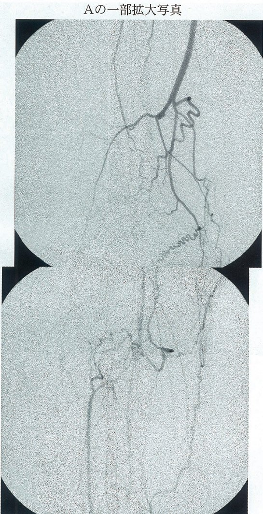
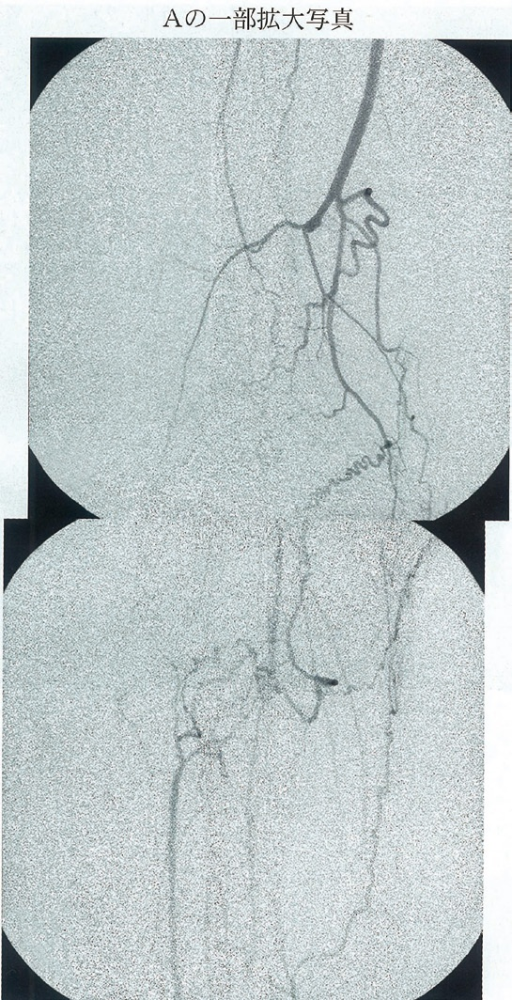
| 治療 | 内容 |
|---|---|
| 禁煙（最重要） | 唯一の根治的介入→禁煙で進行停止 |
| 抗血小板薬 | 血栓予防 |
| 血管拡張薬 | PGE1製剤・カルシウム拮抗薬 |
| 腰部交感神経節ブロック | 血管拡張・疼痛緩和 |
| 血行再建術 | 末梢血管が標的→バイパスが困難なことが多い |
| 誤り：ステロイド | 非炎症性疾患→効果なし→禁忌ではないが不適切 |
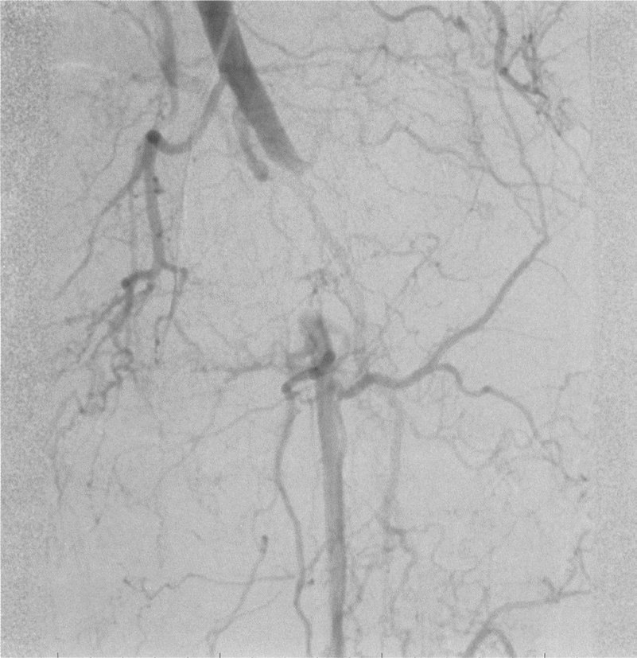
| 指導内容 | ポイント |
|---|---|
| 禁煙 | 最重要→進行抑制 |
| 体重管理 | 動脈硬化リスク低減 |
| フットケア | 傷・皮膚炎→壊疽を防ぐ |
| 運動療法 | 歩行訓練（監督下）→跛行改善 |
| 冷却は禁忌 | 血管収縮で虚血悪化→正解（誤った指導） |
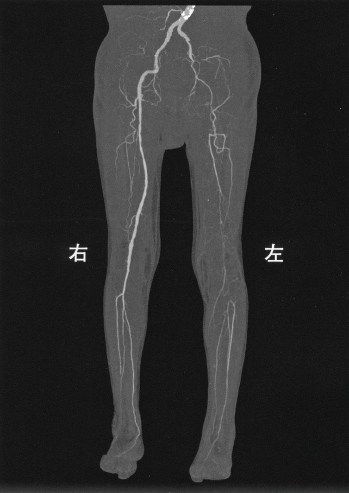
| 説明内容 | 適否 |
|---|---|
| 禁煙継続は悪化 | 喫煙→血管収縮・動脈硬化進行→正しい説明 |
| 足の清潔保持 | 感染→壊疽拡大リスク→正しい説明 |
| 膝以下の血流障害あり | 膝窩・足背動脈消失→膝まで良好は誤り（正解） |
| 血行不良で傷が治らない | 虚血→創傷治癒不全→正しい説明 |
| 冠動脈疾患の合併 | ASO患者の50%に冠動脈疾患→正しい説明 |
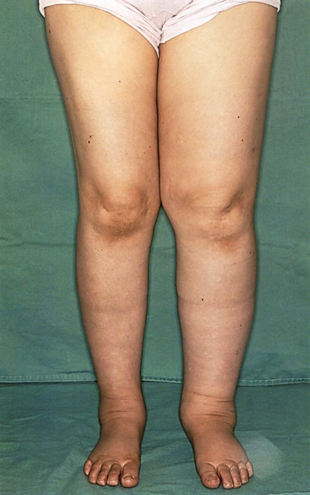
| 浮腫の種類 | 特徴 |
|---|---|
| リンパ浮腫 | 非圧痕性・術後・がん治療後・片側（または非対称） |
| DVT（静脈性） | 圧痕性・片側・急性発症・Dダイマー上昇 |
| 心性浮腫 | 圧痕性・両側・頸静脈怒張・SpO2低下 |
| 腎性浮腫 | 圧痕性・両側・眼瞼浮腫・蛋白尿 |
| 甲状腺機能低下症 | 非圧痕性（粘液水腫）・全身性・TSH上昇 |
| 項目 | 内容 |
|---|---|
| 診断 | 造影CT・血管エコー→閉塞部位確認 |
| 緊急治療 | ヘパリン静注（即時）→血栓除去術（Fogartyカテーテル） |
| 血栓溶解療法 | 手術困難例・遠位部閉塞に適応 |
| 時間的制限 | 6時間以内→筋壊死・コンパートメント症候群を防ぐ |
| 鑑別（脳梗塞） | 上肢症状のみ・意識清明・局所脈消失→急性動脈閉塞 |
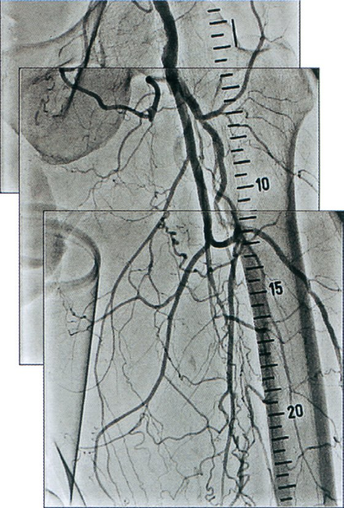
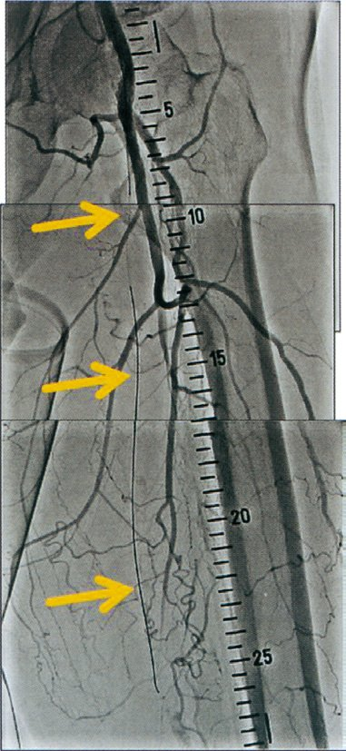
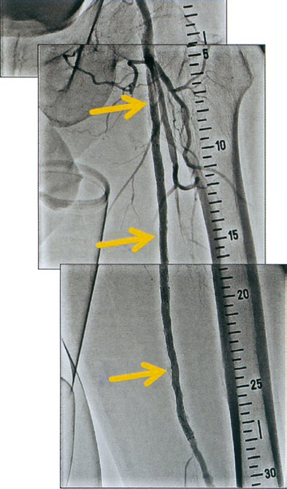
| 部位・治療 | 特徴 |
|---|---|
| 浅大腿動脈（SFA） | 大腿を走る→最多閉塞→EVTの良い適応 |
| 腸骨動脈 | Leriche症候群（両側）：臀部跛行・インポテンツ |
| 膝窩〜下腿動脈 | 糖尿病・Buerger病で好発 |
| ステント留置 | EVT（血管内治療）：低侵襲・回復早い |
| バイパス術 | 長区間閉塞・EVT不適応例 |
| 薬剤 | 相互作用 |
|---|---|
| 抗凝固薬（ワルファリン等） | 抗血小板+抗凝固→出血リスク激増（正解） |
| PPI（ランソプラゾール等） | CYP2C19阻害→シロスタゾール血中濃度↑ |
| スタチン | 相互作用は軽微 |
| ACE阻害薬 | 相互作用なし |
| 禁忌：心不全 | PDE3阻害→強心作用→心不全悪化リスク |
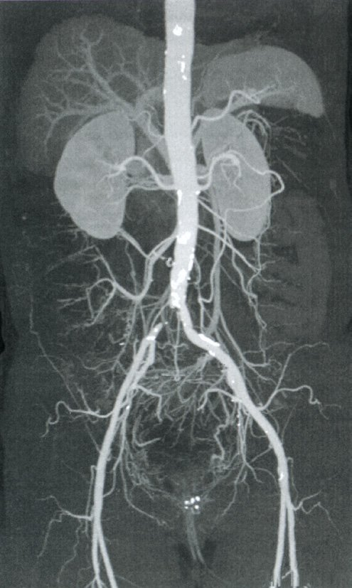
| 項目 | ASO | 急性閉塞 |
|---|---|---|
| ASO（慢性） | 急性動脈閉塞 | |
| 病態 | 動脈硬化による慢性狭窄 | 血栓・塞栓による急性閉塞 |
| 症状 | 間歇性跛行 | 突然の6P徴候 |
| 治療 | 運動・薬物・PTA・バイパス | ヘパリン＋Fogartyカテーテル |
| Fogartyカテーテル | 不適 | 適応（正解） |
| 検査 | 感度 | 特異度 | 侵襲 | 推奨 |
|---|---|---|---|---|
| 検査 | 感度 | 特異度 | 侵襲 | 選択 |
| Dダイマー | 89% | 55% | 採血のみ | スクリーニング |
| 空気容積脈波 | 85% | 91% | 非侵襲 | 補助的 |
| 静脈造影MRA | 91% | 93% | 造影剤 | 2番手 |
| 血小板シンチ | 73% | 68% | 放射線 | 不適 |
| 圧迫超音波 | 91% | 98% | 非侵襲 | 第一選択 |
| 治療 | 適応 |
|---|---|
| 抗凝固療法 | ヘパリン→DOAC/ワルファリン（標準治療） |
| 血栓溶解療法 | 大腸骨静脈・下大静脈の広範囲血栓に限定的適応 |
| 血栓除去術 | 血栓溶解禁忌・重篤例 |
| IVC（下大静脈）フィルター | PE高リスク・抗凝固禁忌時 |
| 弾性ストッキング | 血栓後症候群予防 |
| 薬剤 | 妊婦における使用 |
|---|---|
| ヘパリン | 胎盤通過せず→妊娠中安全→第一選択 |
| ワルファリン | 胎盤通過→胎児奇形・出血→妊婦禁忌 |
| DOAC | 妊婦禁忌（安全性未確立） |
| アスピリン | 低用量は使用可だが抗凝固としては不十分 |
| ウロキナーゼ（血栓溶解） | 出血リスク大・妊婦には原則禁忌 |
| 特徴 | 神経性 | 血管性 |
|---|---|---|
| 脊柱管狭窄（神経性） | ASO（血管性） | |
| 改善 | 前屈・座る | 立ち止まる |
| 自転車 | 可（前傾姿勢） | 可（負荷軽い） |
| 足背動脈 | 正常 | 消失・減弱 |
| ABI | 正常 | <0.9 |
| 画像 | 腰椎MRI（脊柱管狭窄） | 血管造影/エコー（閉塞） |
| 浮腫の種類 | 特徴 |
|---|---|
| 静脈性浮腫 | 圧痕性・片側性・静脈還流障害・腫瘍圧迫・DVT |
| 心性浮腫 | 圧痕性・両側性・頸静脈怒張・BNP上昇 |
| 腎性浮腫 | 圧痕性・両側性・蛋白尿・Cr上昇 |
| リンパ性浮腫 | 非圧痕性・術後・放射線後 |
| 内分泌性浮腫 | 粘液水腫（甲状腺機能低下症）・非圧痕性 |
| 所見 | 機序 |
|---|---|
| 浮腫 | 静脈圧↑→毛細血管静水圧↑→組織間液漏出 |
| 色素沈着 | ヘモジデリン沈着→褐色色素 |
| 点状出血 | 毛細血管脆弱性↑ |
| 潰瘍 | 内果周囲・難治性・感染しやすい |
| 多毛（無関係） | 皮膚・毛包異常ではない→静脈瘤と無関係 |
| 比較 | DVT | リンパ浮腫 |
|---|---|---|
| 疾患 | DVT | リンパ浮腫 |
| 病態 | 静脈内血栓 | リンパ管閉塞 |
| 保存的治療 | 抗凝固薬・弾性ストッキング | 圧迫療法・MLD |
| 外科治療 | 血栓除去術・IVCフィルター | リンパ管静脈吻合術・リンパ節移植 |
| 誤答 | リンパ管静脈吻合術 |